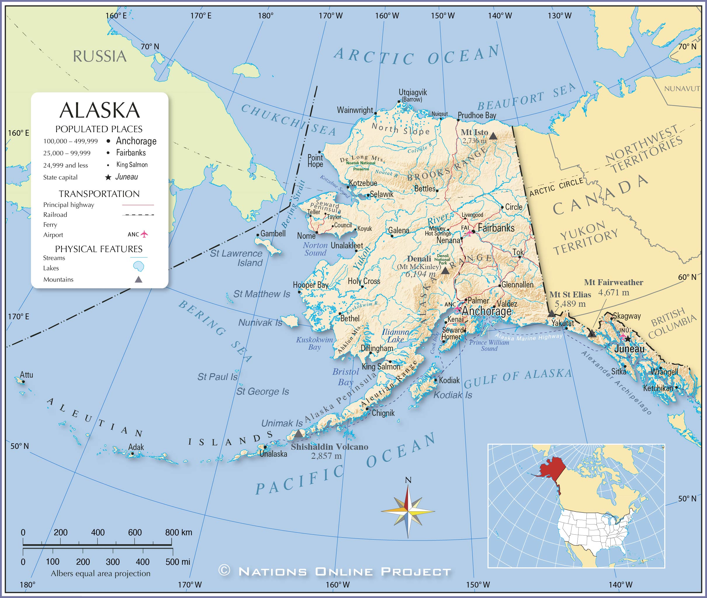
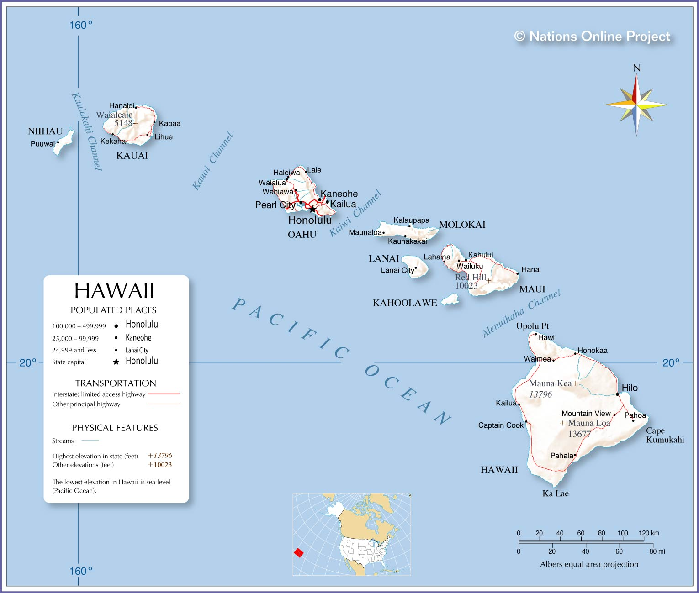

I have never been to the state.
I would like to visit Mt. Hood, Crater Lake, and visit the coastline.
The trip would involve doing outdoor activities such as hiking, swimming, and white water rafting.
This country is supposedly very nice, and a great place to visit.
My older brother was there for about a few weeks and had a great time there.
I think it would be cool to visit there and experience what the country has to offer.
I was promised a trip there by parents but it never happened.
I would like to visit the beaches, volcanoes and national parks of the country.
I hope to go there at some point in the future.
I have been to Hawaii before, but I would be intrested in returning to Kauai so that I could relax, and hike
However, I have never been to Maui, but I have heard good things about the region from my family.
I hope to return soon
This summer, I went all over the state of Alaska, including Anchorage, Fairbanks, all the way down to Seward.
However, I want to explore more of the Kenai Pennisula since there is more hiking, tourism and exploring to do.
I can't wait to return there!!!
Oregon:

Israel:

Costa Rica:

Alaska:
Hawaii:
| Location | Sights | Hobbies |
|---|---|---|
| Oregon | Mt. Hood Portland Crater Lake Multnomah Falls |
Hiking Exploring the cities Swimming Relaxing |
| Israel | Jerusalem Tel Aviv Haifa |
Hiking Exploring the cities Cultural Socializing |
| Costa Rica | San Jose Volacnoes National Parks Ziplining |
Hiking Eploring the cities Exploring national parks Relaxing |
| Hawaii (Kauai, Maui) | Kalalau Trail Weimea Canyon Botanical gardens Mountian climbing |
Hiking Exploring the cities Swimming Relaxing |
| Alaska (Kenai Pennisula) | Seward Homer Kenai fjords |
Hiking Reexploring the area relaxing |